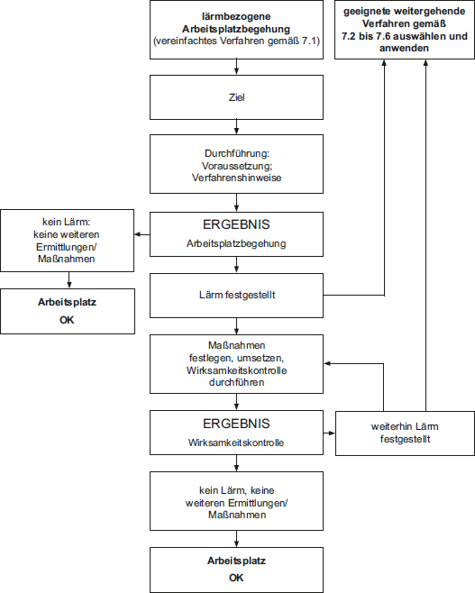
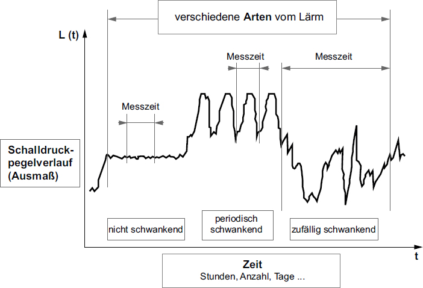

(1) Beim Betreiben einer Arbeitsstätte können Halligkeit, schlechte Sprachverständlichkeit, störende Sprachgeräusche, tonhaltige Geräusche, deutlich wahrnehmbare Hintergrundgeräusche sowie Beschwerden von Beschäftigten über Lärm am Arbeitsplatz Hinweise auf unzureichende raumakustische Bedingungen, zu hohe Beurteilungspegel für Tätigkeiten an Arbeitsplätzen in Arbeitsräumen oder tieffrequente Schallbelastungen sein, die zu einer Gefährdung der Gesundheit der Beschäftigten führen können und im Rahmen der Gefährdungsbeurteilung weitere Ermittlungen und eine Beurteilung der akustischen Situation erfordern.
(2) Für die Beurteilung der Gefährdung durch Lärm sind typische und längerfristig stabile Betriebsabläufe in einer Arbeitsstätte oder an einem Arbeitsplatz zu betrachten. Einzelne, zufällige oder zeitweilige, vorübergehende Schalleinwirkungen durch Dritte, z. B. Lärm durch Einsatz- oder Abfallsammelfahrzeuge, Gartengeräte oder benachbarte Baustellen, sind nicht zu berücksichtigen.
(3) Die Beurteilung der akustischen Situation während des Betreibens der Arbeitsstätte kann mit einem vereinfachten Verfahren durch lärmbezogene Arbeitsplatzbegehung erfolgen (Abschnitt 7.1).
(4) Alternativ können auch weitergehende Ermittlungsverfahren zur differenzierten Beurteilung von Raumakustik, Lärmpegeln und tieffrequentem Schall angewendet werden (Abschnitte 7.2 bis 7.6):
Hinweis zu Absatz 2:
Um die Belastung der Beschäftigten in Arbeitsstätten bei von Dritten verursachtem Baulärm zu reduzieren, ist mittels lärmbezogener Arbeitsplatzbegehung nach Absatz 3 oder orientierender Messung nach Abschnitt 7.4 Absatz 4 zu prüfen, ob organisatorische Regelungen (z. B. zeitweilige Verlagerung von Arbeitsplätzen in lärmärmere Bereiche, Anpassung der Arbeitsabläufe, der Pausen- oder Arbeitszeiten) oder im Ausnahmefall das Bereitstellen von persönlicher Schutzausrüstung (Gehörschutz) je nach Baufortschritt der Baustelle möglich und sinnvoll sind. Der Arbeitgeber kann außerdem bei der dafür zuständigen Stelle gegebenenfalls darauf hinwirken, dass Baustellen nach dem Stand der Lärmminderungstechnik betrieben werden.
Hinweis zu Absätzen 3 und 4:
Sind nach der ASR A3.6 "Lüftung" Lüftungszeiten erforderlich, sind diese beim Messen und Beurteilen zu berücksichtigen.
(1) Die lärmbezogene Arbeitsplatzbegehung dient zur Feststellung, ob am Arbeitsplatz unter Betriebsbedingungen störender oder belästigender Schall (Lärm) auftritt. Sie ist von mindestens zwei Personen unabhängig voneinander zu Zeiten des längerfristig typischen Betriebsablaufs am zu beurteilenden Arbeitsplatz vorzunehmen.
(2) Bei der lärmbezogenen Arbeitsplatzbegehung ist insbesondere auf Folgendes zu achten:
| a) | Wirkt der Raum hallig? Gibt es schallharte und glatte Materialien an Wänden, Decken, Fußböden sowie bei Einrichtungen, Einbauten usw. oder große Fensterflächen? |
| b) | Wie wird der Raum genutzt? Welche akustischen Anforderungen bestehen? Treten informationshaltige Geräusche, Sprachgeräusche oder andere störende Geräusche auf? |
| c) | Gibt es Besonderheiten in der Raumnutzung? Werden Tätigkeiten mit unterschiedlichen akustischen Anforderungen an Arbeitsplätze zur gleichen Zeit im gleichen Raum durchgeführt? Gibt es akustisch dominante Schallquellen am oder in der Nähe des Arbeitsplatzes? |
(3) Nur wenn sich durch die lärmbezogene Arbeitsplatzbegehung störender oder belästigender Schall (Lärm) eindeutig ausschließen lässt, sind keine weiteren Ermittlungen oder Maßnahmen erforderlich.
(4) Wird bei der lärmbezogenen Arbeitsplatzbegehung störender oder belästigender Schall (Lärm) festgestellt, hat der Arbeitgeber entweder Maßnahmen festzulegen, umzusetzen und eine Wirksamkeitskontrolle durchzuführen oder er hat geeignete weitergehende Ermittlungsverfahren gemäß Abschnitt 7 Absatz 4 auszuwählen und anzuwenden. Liegt nach einer Wirksamkeitskontrolle kein störender oder belästigender Schall (Lärm) mehr vor, sind keine weiteren Ermittlungen oder Maßnahmen erforderlich.
Den Ablauf des vereinfachten Verfahrens durch lärmbezogene Arbeitsplatzbegehung stellt Abbildung 2 dar.

Abb. 2: Ablauf des vereinfachten Verfahrens durch lärmbezogene Arbeitsplatzbegehung
(1) Die Abschätzung der raumakustischen Kennwerte (Nachhallzeit, mittlerer Schallabsorptionsgrad) von Räumen in bestehenden Arbeitsstätten kann mit Kenntnis der Raumabmessungen und der Schallabsorptionsgrade der raumbegrenzenden Oberflächen und der weiteren Oberflächen (z. B. Einrichtung, Trennwände) entsprechend dem Anhang 2 erfolgen.
(2) Lässt sich durch die Abschätzung der raumakustischen Kennwerte feststellen, dass die Anforderungen entsprechend Abschnitt 5.2 eingehalten werden, sind keine weiteren Ermittlungen oder raumakustischen Maßnahmen erforderlich.
(3) Wird durch die Abschätzung der raumakustischen Kennwerte festgestellt, dass diese nicht eingehalten werden, hat der Arbeitgeber Maßnahmen festzulegen, umzusetzen und eine Wirksamkeitskontrolle durchzuführen. Werden danach die Anforderungen entsprechend Abschnitt 5.2 eingehalten, sind keine weiteren Ermittlungen oder raumakustischen Maßnahmen erforderlich.
(1) Alternativ zu Abschnitt 7.2 lassen sich die raumakustischen Kennwerte unter bestimmten Bedingungen (Raumdimensionen, Diffusität usw.) durch Messung der Nachhallzeit oder der mittleren Schalldruckpegelabnahme je Abstandsverdopplung ermitteln.
(2) Personen, die raumakustische Kennwerte ermitteln, müssen aufgrund ihrer fachlichen Ausbildung oder ihrer Erfahrungen entsprechende Kenntnisse über die Beurteilung der Raumakustik haben, z. B. unter der Anwendung der DIN EN ISO 3382-2:2008-09 oder der Anwendung des Verfahrens zur Ermittlung der mittleren Schalldruckpegelabnahme je Abstandsverdopplung gemäß TRLV Lärm Teil 3, Ausgabe Januar 2010, Abschnitt 4.3.2.
Hinweis:
Eine frequenzabhängige Ermittlung der Nachhallzeit ist notwendig für die Planung geeigneter Maßnahmen, z. B. den gezielten Einsatz frequenzadaptierter Absorber.
(3) Wenn für Räume entsprechend Abschnitt 5.2.1 und Abschnitt 5.2.2 die vorgegebenen Nachhallzeiten eingehalten werden, sind keine weiteren Ermittlungen oder raumakustischen Maßnahmen erforderlich. Gleiches gilt für einen sonstigen Arbeitsraum mit Sprachkommunikation, wenn der aus der Nachhallzeit ermittelte mittlere Schallabsorptionsgrad oder die gemessene Schalldruckpegelabnahme je Abstandsverdopplung entsprechend Abschnitt 5.2.3 eingehalten wird.
(4) Wird durch die messtechnische Ermittlung der raumakustischen Kennwerte festgestellt, dass die Anforderungen entsprechend Abschnitt 5.2 nicht eingehalten werden, hat der Arbeitgeber Maßnahmen festzulegen, umzusetzen und eine Wirksamkeitskontrolle durchzuführen. Werden die Anforderungen danach eingehalten, sind keine weiteren Ermittlungen oder raumakustische Maßnahmen erforderlich.
(1) Bei der orientierenden Messung ist der A-bewertete äquivalente Dauerschallpegel während der Tätigkeit zu ermitteln. Die Messung hat die während der Tätigkeit längerfristig typisch auftretenden Geräusche zu erfassen. Eigengeräusche sind bei der Messung nicht mit zu erfassen.
Hinweis:
Die orientierende Messung ist ein verkürztes und vereinfachtes Verfahren, das auf den Grundzügen des in der DIN 45645-2:2012-09 genormten Mess- und Beurteilungsverfahrens zur Ermittlung des Beurteilungspegels am Arbeitsplatz basiert.
(2) Für orientierende Messungen zur Ermittlung des Lärmpegels bei Tätigkeiten am Arbeitsplatz sind integrierende Schallpegelmesser der Klasse 1 oder 2 (Genauigkeit des Messgerätes) einzusetzen.
Hinweis:
Die Anforderungen an die Schallpegelmesser sind in DIN EN 61672-1:2014-07 genormt.
(3) Die Schallimmission wird mit dem Schallpegelmesser an dem Ort erfasst, an dem die Tätigkeit ausgeübt wird. Grundsätzlich wird diese Messung aus technischen Gründen so durchgeführt, dass die beschäftigte Person ihren Arbeitsplatz nicht einnimmt (Schallreflexionen, Abschattungseffekte). Das Mikrofon wird dabei an der üblichen Position des Kopfes in Höhe der Augen gehalten. Sollte die Anwesenheit der beschäftigten Person am Arbeitsplatz während der Messung erforderlich sein, ist das Mikrofon in Ohrnähe der beschäftigten Person so zu positionieren, dass die Geräuscheinwirkung auf das Mikrofon nicht durch den Körper der beschäftigten Person behindert wird.
(4) Die Messzeit muss nach Art, Ausmaß und Dauer (Abbildung 3) jeweils lang genug sein, um den mittleren Schalldruckpegel der betrachteten Schalleinwirkung zu erfassen, das heißt, die Messung muss sich nicht über die gesamte Zeitdauer der betrachteten Schalleinwirkung erstrecken:

Abb. 3: Art, Ausmaß und Dauer der Lärmeinwirkung, nach TRLV Lärm Teil 2 "Messung von Lärm". Technische Regel zur Lärm- und Vibrations-Arbeitsschutzverordnung, August 2017
(5) Die Messung kann jeweils beendet werden, wenn erkennbar ist, dass sich der angezeigte A-bewertete äquivalente Dauerschallpegel LpAeq durch alle zu erwartenden weiteren Geräuschbeiträge nicht mehr nennenswert ändert.
(6) Weitere Ermittlungen oder Maßnahmen sind nicht erforderlich, wenn
(7) Wird durch die orientierende Messung festgestellt, dass die Werte nach Absatz 6 Nummer 1 oder 2 überschritten werden, kann der Arbeitgeber Maßnahmen festlegen, umsetzen und eine Wirksamkeitskontrolle durchführen. Werden danach die Werte nach Absatz 6 Nummer 1 oder 2 eingehalten, sind keine weiteren Ermittlungen zu Pegelwerten bei Tätigkeiten in Arbeitsräumen erforderlich.
Alternativ kann er auch durch das Verfahren zur Ermittlung von Beurteilungspegeln für Tätigkeiten an Arbeitsplätzen in Arbeitsräumen überprüfen, ob die Anforderungen nach Abschnitt 5.1 eingehalten werden.
(1) Die Ermittlung des Beurteilungspegels am Arbeitsplatz umfasst mindestens folgende Arbeitsschritte:
Hinweis:
Ein geeignetes Verfahren ist das in DIN 45645-2:2012-09 dargestellte Mess- und Beurteilungsverfahren.
(2) Die Ermittlung des Beurteilungspegels verlangt von der durchführenden Person mindestens Kenntnisse:
(3) Zur Ermittlung des Beurteilungspegels ist es gegebenenfalls erforderlich, dass die für den Arbeitgeber tätig werdenden Personen Einsicht in alle für die Ermittlung erforderlichen Unterlagen nehmen können und alle notwendigen Informationen über Arbeitsprozesse und Organisation der Arbeiten erhalten, z. B. die Art der Tätigkeit der Beschäftigten, die Dauer der Lärmeinwirkung.
(4) Am zu beurteilenden Arbeitsplatz ist durch eine Arbeitsplatzanalyse zu ermitteln, welche Schallimmissionen auf die beschäftigte Person über welche Zeiträume einwirken, ob impuls- oder ton- und informationshaltige Geräusche vorliegen und ob die angetroffenen Schallsituationen für eine festzulegende Nutzungsphase repräsentativ sind. Jede charakteristische Schallsituation ist eigenständig zu betrachten, wenn sie eine Stunde oder länger anhält. Für diese Zeiträume sind die Beurteilungspegel jeweils separat zu ermitteln.
(5) Für die Messung gelten die Ausführungen unter Abschnitt 7.4 Absätze 2 bis 5. Es sind jedoch geprüfte Messgeräte zu verwenden. Zusätzlich wird die Impulshaltigkeit der Schallimmission ermittelt. Eigengeräusche sind wie bei der Messung nach Abschnitt 7.4 Absatz 1 nicht mit zu erfassen.
(6) Zur Bestimmung der Zuschläge KI und KT gelten folgende Regeln:
(7) Der Beurteilungspegel Lr für die zu beurteilende Tätigkeit ergibt sich als Summe aus dem A-bewerteten äquivalenten Dauerschallpegel LpAeq während der Tätigkeit und den bestimmten Zuschlägen für Impulshaltigkeit (KI) sowie Ton- und Informationshaltigkeit (KT):
Lr = LpAeq + KI + KT
(8) Liegen die ermittelten Beurteilungspegel für die Tätigkeit am zu beurteilenden Arbeitsplatz oberhalb der in Abschnitt 5.1 vorgegebenen Werte, hat der Arbeitgeber Maßnahmen festzulegen, umzusetzen und eine Wirksamkeitskontrolle durchzuführen.
(9) Liegen die ermittelten Beurteilungspegel für die Tätigkeit am zu beurteilenden Arbeitsplatz unterhalb der in Abschnitt 5.1 vorgegebenen Werte, sind keine weiteren Maßnahmen zur Pegelminderung erforderlich.
(1) Zur Bewertung tieffrequenter Geräusche können ergänzende Messungen erforderlich sein. Besteht eine begründete Möglichkeit der Einwirkung tieffrequenter Lärmanteile, sind gesonderte messtechnische Überprüfungen erforderlich. Weitere Erkenntnisse kann dazu eine Terzanalyse z. B. entsprechend DIN 45680:1997-03 ergeben.
(2) Eine begründete Möglichkeit ergibt sich z. B. daraus, dass die Wahrnehmungsschwelle für tieffrequenten Schall überschritten wird und sich Symptome der Beschäftigten (siehe Anhang 1) beim Verlassen des Arbeitsplatzes verringern.
(3) Wird die Einwirkung tieffrequenter Lärmanteile festgestellt, die die Sicherheit und Gesundheit der Beschäftigten beeinträchtigen, hat der Arbeitgeber Maßnahmen festzulegen, umzusetzen und eine Wirksamkeitskontrolle durchzuführen.